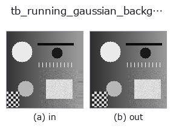
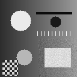

typed op• データ種: video → video
• 呼び出し: fullseye.apply(img, "tb_running_gaussian_background", a=0.5, b=0.5) (2-D は 1 画像 + 2 スカラつまみ a,b∈[0,1] のモデル)

*図は合成の入力 128×128 で実際に走らせた出力。左が入力、右が出力。点群は上から見た散布(明るさ = z)、1-D 列は折れ線、体積は z 方向の最大値投影、動画は中央フレーム、複素画像は振幅、絵にならない返り値は値そのもの。*
つまみ a を振る(0.1 / 0.5 / 0.9、もう一方は既定):
▸ tb_running_gaussian_background: knob a sweep (docs site)
つまみ b を振る(0.1 / 0.5 / 0.9、もう一方は既定):
▸ tb_running_gaussian_background: knob b sweep (docs site)
段階(前置きの op → この op。左から順):
▸ tb_running_gaussian_background: stages (docs site)
別の画像でも(合成シーン / 写真 / 硬貨。上段が入力、下段がその出力。つまみは既定):
▸ tb_running_gaussian_background: other inputs (docs site)
動き(GIF: フレーム / 視点 / スライスを順に。静止の図が完成形で、GIF は補助):

Adaptive single-Gaussian background (the running mean) per frame → `(T, H, W) (video`).
画素ごとに平均 `mean と分散 var` を持つ単一ガウス背景(Wren の Pfinder)を
回し、各フレーム後の `mean` を返す。前景判定は
`(frame - mean)^2 > k^2 var。selective=True`(既定)では前景と判定した画素の
`mean / var` を更新しないので、ゆっくり動く物体が背景に溶けない。
更新式は `mean += α diff、var += α (diff^2 - var)、var` の下限は 1e-4。
• `video: (T, H, W) 配列か 2-D フレームの list。整数は最大値で [0, 1]`
に正規化、float はクリップ。NaN/Inf は `ValueError`。
• `alpha: [0, 1]` の学習率。既定 0.02(時定数およそ 50 枚)。
• `k: [0, 100]`。前景とみなす標準偏差の倍数。既定 2.5。
• `var_init: [1e-9, 1]。先頭フレームでの分散の初期値([0, 1]` 強度の 2 乗)。
小さすぎると 2 枚目から全画素が前景になり、`selective` で更新が止まる。
• `selective: 前景画素の更新を止めるか。False` なら全画素を常に更新。
• 返り値: `(T, H, W) float64。t = 0` は先頭フレームそのもの。
• 失敗: `ValueError`(形・dtype・各範囲)。
同じモデルの前景マスクは `running_gaussian_foreground`(同じ引数で対にすると
フレームごとに整合する)。
2-D 進化レジストリへ橋渡しした videostream の op `running_gaussian_background。実装は同じで、呼び出し規約だけ op(v, a, b) に合わせてある。a が alpha(既定 0.02)、b が k`(既定 2.5)を振る。
• サンプルデータ カタログ(DL URL / ライセンス) — 2-D は skimage.data(BSD/public)+ 合成、3-D は実データ源(Stanford/PDS 等)の DL URL。
• 演算子の来歴・参考文献 — この op 族の元になった研究/手法の出典。
下のプログラムは実際に走ることを確かめてある(図と同じ入力)。Studio のヘルプではこのブロックがボタンになり、その場で読み込んで実行できる。
img_to_video 0.50 0.50 tb_running_gaussian_background 0.50 0.50
▸ Load this pipeline · Load & run
次の例は元の台帳 op running_gaussian_background を呼ぶもの。この橋渡し op は同じ実装を fn(v, a, b) 規約に合わせただけなので、挙動はそのまま当てはまる(呼び出し形だけ違う)。
• video_streaming — py -3.11 examples/video_streaming.py
video を入力に取れる)identity · tb_temporal_bandpass · tb_temporal_band_power · tb_temporal_median_window · tb_moving_average_window · tb_background_subtraction_window · tb_frame_difference_causal · tb_exponential_background
typed)tb_points_to_voxel · tb_estimate_point_normals · tb_iss_keypoints · tb_project_points · tb_render_point_depth · tb_statistical_outlier_removal · tb_radius_outlier_removal · tb_voxel_grid_downsample
*Provenance: ops.py — 2D operator registry. この per-op ノートは tools/opdocs.py md が自動生成(手編集しない)。*
© 2026 Kazufumi Furuse — Fullseye operator documentation. Licensed under Apache-2.0.
{kind=link}
{kind=link}
{kind=link}
{kind=link}